La Virtuosa de las Cuerdas
y no puede hablar
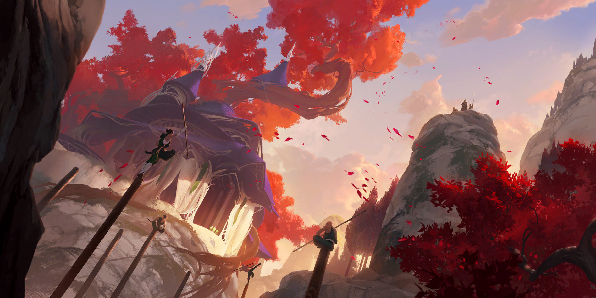
No había quién le enseñara.
Aprendió a tocar sola.
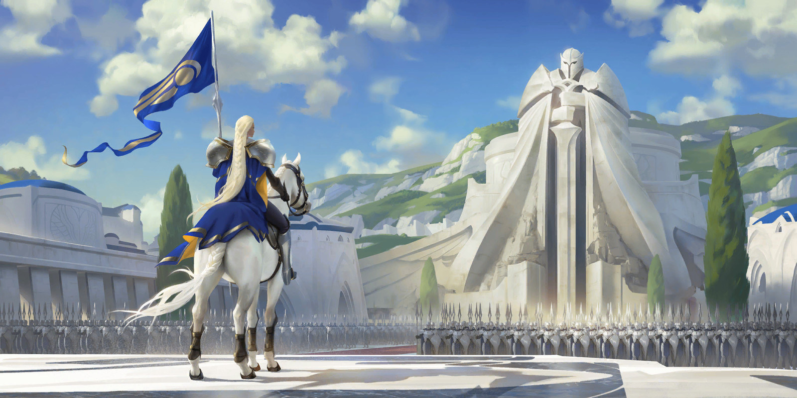
Y le inventaron un lenguaje de señas
nada más para ella
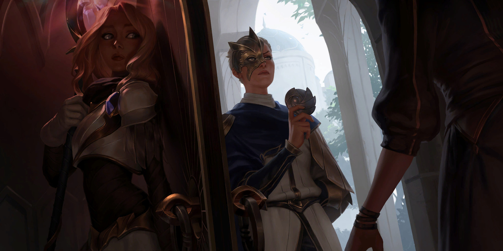
Es maga, en el país que caza magos
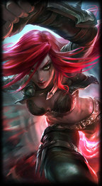
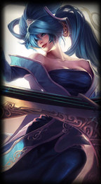
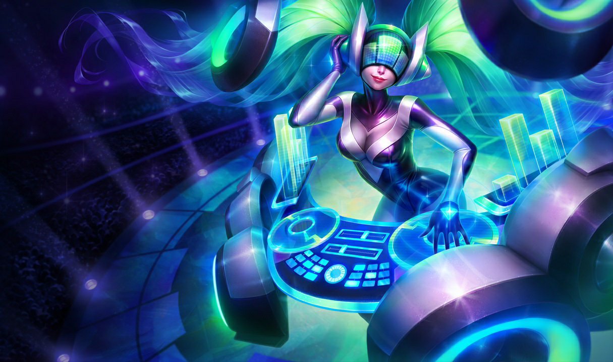
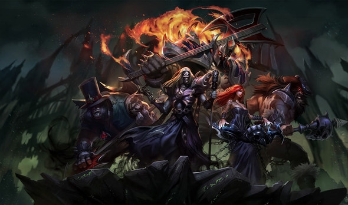
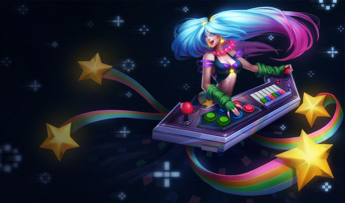
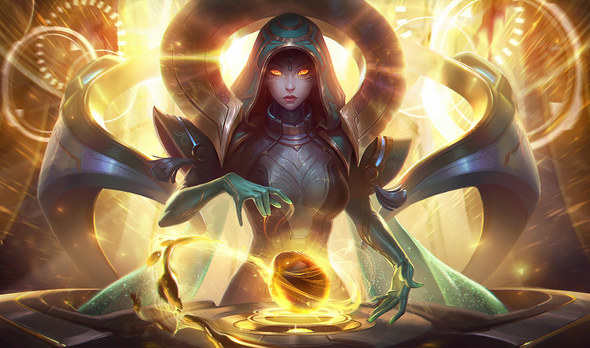
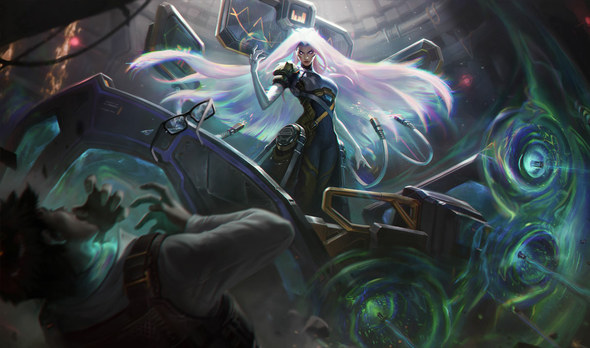
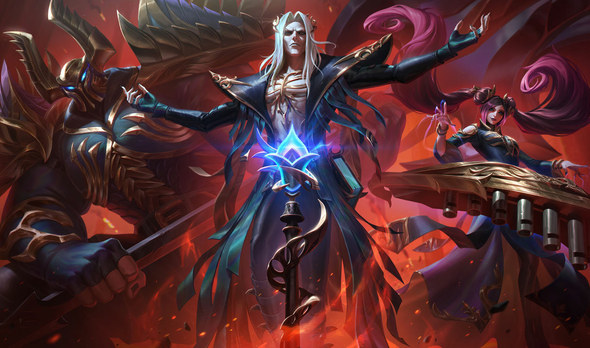
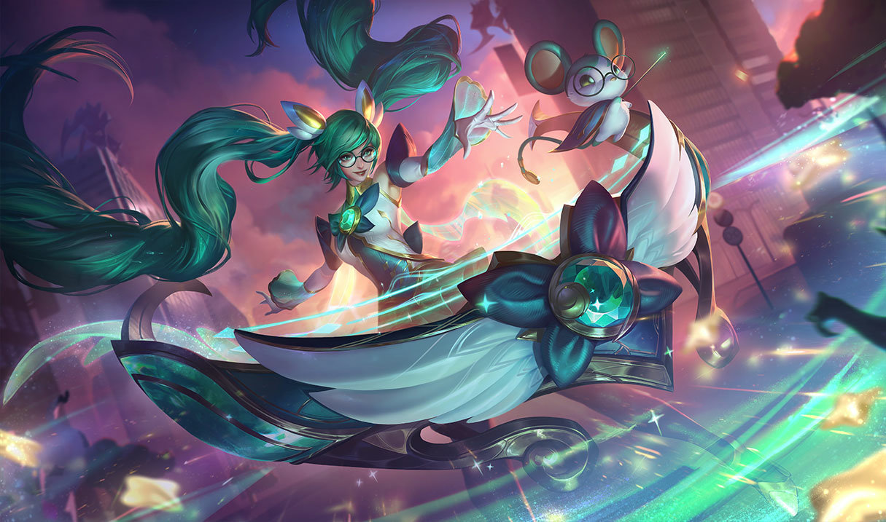
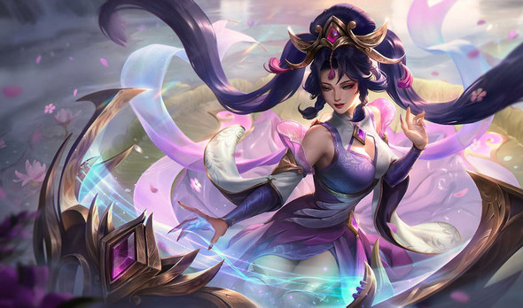
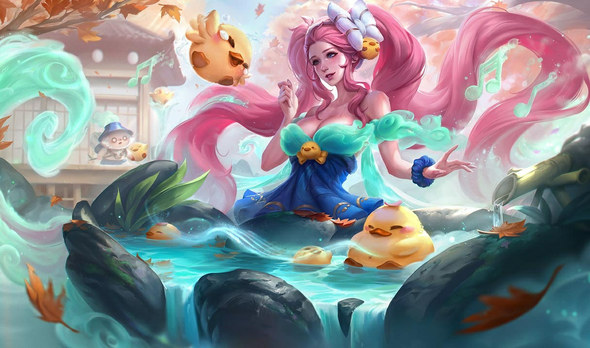
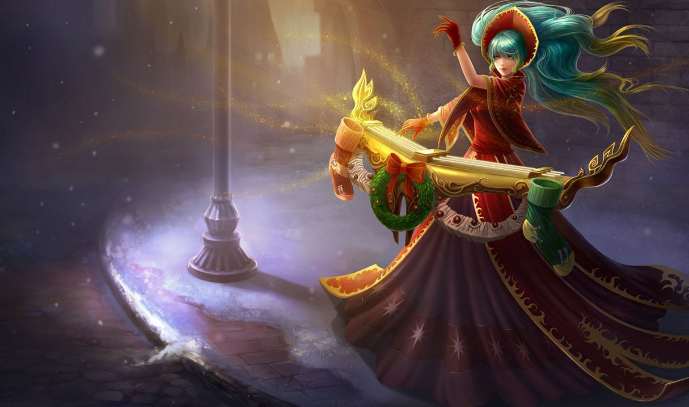
Para la única campeona
del juego que no puede hablar